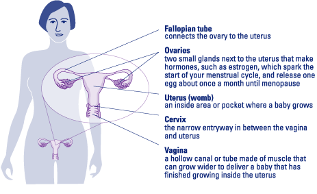
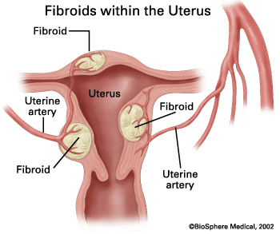
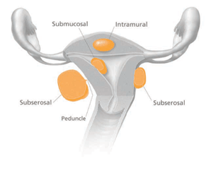

Uterine fibroids
Fibroids are muscular tumors that grow in the wall of the uterus (womb). Fibroids are almost always benign (not cancerous). Not all women with fibroids have symptoms. Women who do have symptoms often find fibroids hard to live with. Some have pain and heavy menstrual bleeding. Treatment for uterine fibroids depends on your symptoms.
What are fibroids?
Fibroids are muscular tumors that grow in the wall of the uterus (womb). Another medical term for fibroids is leiomyoma or just "myoma". Fibroids are almost always benign (not cancerous). Fibroids can grow as a single tumor, or there can be many of them in the uterus. They can be as small as an apple seed or as big as a grapefruit. In unusual cases they can become very large.


Why should women know about fibroids?
About 20 percent to 80 percent of women develop fibroids by the time they reach age 50. Fibroids are most common in women in their 40s and early 50s. Not all women with fibroids have symptoms. Women who do have symptoms often find fibroids hard to live with. Some have pain and heavy menstrual bleeding. Fibroids also can put pressure on the bladder, causing frequent urination, or the rectum, causing rectal pressure. Should the fibroids get very large, they can cause the abdomen (stomach area) to enlarge, making a woman look pregnant.
Who gets fibroids?
There are factors that can increase a woman's risk of developing fibroids.
- Age. Fibroids become more common as women age, especially during the 30s and 40s through menopause. After menopause, fibroids usually shrink.
- Family history. Having a family member with fibroids increases your risk. If a woman's mother had fibroids, her risk of having them is about three times higher than average.
- Ethnic origin. African-American women are more likely to develop fibroids than white women.
- Obesity. Women who are overweight are at higher risk for fibroids. For very heavy women, the risk is two to three times greater than average.
- Eating habits. Eating a lot of red meat (e.g., beef) and ham is linked with a higher risk of fibroids. Eating plenty of green vegetables seems to protect women from developing fibroids.
Where can fibroids grow?

Most fibroids grow in the wall of the uterus. Doctors put them into three groups based on where they grow:
- Submucosal (sub-myoo-KOH-zuhl) fibroids grow into the uterine cavity.
- Intramural (ihn-truh-MYOOR-uhl) fibroids grow within the wall of the uterus.
- Subserosal (sub-suh-ROH-zuhl) fibroids grow on the outside of the uterus.
Some fibroids grow on stalks that grow out from the surface of the uterus or into the cavity of the uterus. They might look like mushrooms. These are called pedunculated (pih-DUHN-kyoo-lay-ted) fibroids.
What are symptoms of fibroids?
Most fibroids do not cause any symptoms, but some women with fibroids can have:
- Heavy bleeding (which can be heavy enough to cause anemia) or painful periods
- Feeling of fullness in the pelvic area (lower stomach area)
- Enlargement of the lower abdomen
- Frequent urination
- Pain during sex
- Lower back pain
- Complications during pregnancy and labor, including a six-time greater risk of cesarean section
- Reproductive problems, such as infertility, which is very rare
What causes fibroids?
No one knows for sure what causes fibroids. Researchers think that more than one factor could play a role. These factors could be:
- Hormonal (affected by estrogen and progesterone levels)
- Genetic (runs in families)
Because no one knows for sure what causes fibroids, we also don't know what causes them to grow or shrink. We do know that they are under hormonal control — both estrogen and progesterone. They grow rapidly during pregnancy, when hormone levels are high. They shrink when anti-hormone medication is used. They also stop growing or shrink once a woman reaches menopause.
Can fibroids turn into cancer?
Fibroids are almost always benign (not cancerous). Rarely (less than one in 1,000) a cancerous fibroid will occur. This is called leiomyosarcoma. Doctors think that these cancers do not arise from an already-existing fibroid. Having fibroids does not increase the risk of developing a cancerous fibroid. Having fibroids also does not increase a woman's chances of getting other forms of cancer in the uterus.
What if I become pregnant and have fibroids?
Women who have fibroids are more likely to have problems during pregnancy and delivery. This doesn't mean there will be problems. Most women with fibroids have normal pregnancies. The most common problems seen in women with fibroids are:
- Cesarean section. The risk of needing a c-section is six times greater for women with fibroids.
- Baby is breech. The baby is not positioned well for vaginal delivery.
- Labor fails to progress.
- Placental abruption. The placenta breaks away from the wall of the uterus before delivery. When this happens, the fetus does not get enough oxygen.
- Preterm delivery.
Talk to your obstetrician if you have fibroids and become pregnant. All obstetricians have experience dealing with fibroids and pregnancy. Most women who have fibroids and become pregnant do not need to see an OB who deals with high-risk pregnancies.
How do I know for sure that I have fibroids?
Your doctor may find that you have fibroids when you see her or him for a regular pelvic exam to check your uterus, ovaries, and vagina. The doctor can feel the fibroid with her or his fingers during an ordinary pelvic exam, as a (usually painless) lump or mass on the uterus. Often, a doctor will describe how small or how large the fibroids are by comparing their size to the size your uterus would be if you were pregnant. For example, you may be told that your fibroids have made your uterus the size it would be if you were 16 weeks pregnant. Or the fibroid might be compared to fruits, nuts, or a ball, such as a grape or an orange, an acorn or a walnut, or a golf ball or a volleyball.
Your doctor can do imaging tests to confirm that you have fibroids. These are tests that create a "picture" of the inside of your body without surgery. These tests might include:
- Ultrasound – Uses sound waves to produce the picture. The ultrasound probe can be placed on the abdomen or it can be placed inside the vagina to make the picture.
- Magnetic resonance imaging (MRI) – Uses magnets and radio waves to produce the picture
- X-rays – Uses a form of radiation to see into the body and produce the picture
- Cat scan (CT) – Takes many X-ray pictures of the body from different angles for a more complete image
- Hysterosalpingogram (HSG) or sonohysterogram – An HSG involves injecting x-ray dye into the uterus and taking x-ray pictures. A sonohysterogram involves injecting water into the uterus and making ultrasound pictures.
You might also need surgery to know for sure if you have fibroids. There are two types of surgery to do this:
- Laparoscopy – The doctor inserts a long, thin scope into a tiny incision made in or near the navel. The scope has a bright light and a camera. This allows the doctor to view the uterus and other organs on a monitor during the procedure. Pictures also can be made.
- Hysteroscopy – The doctor passes a long, thin scope with a light through the vagina and cervix into the uterus. No incision is needed. The doctor can look inside the uterus for fibroids and other problems, such as polyps. A camera also can be used with the scope.
What questions should I ask my doctor if I have fibroids?
- How many fibroids do I have?
- What size is my fibroid(s)?
- Where is my fibroid(s) located (outer surface, inner surface, or in the wall of the uterus)?
- Can I expect the fibroid(s) to grow larger?
- How rapidly have they grown (if they were known about already)?
- How will I know if the fibroid(s) is growing larger?
- What problems can the fibroid(s) cause?
- What tests or imaging studies are best for keeping track of the growth of my fibroids?
- What are my treatment options if my fibroid(s) becomes a problem?
- What are your views on treating fibroids with a hysterectomy versus other types of treatments?
A second opinion is always a good idea if your doctor has not answered your questions completely or does not seem to be meeting your needs.
How are fibroids treated?
Most women with fibroids do not have any symptoms. For women who do have symptoms, there are treatments that can help. Talk with your doctor about the best way to treat your fibroids. She or he will consider many things before helping you choose a treatment. Some of these things include:
- Whether or not you are having symptoms from the fibroids
- If you might want to become pregnant in the future
- The size of the fibroids
- The location of the fibroids
- Your age and how close to menopause you might be
If you have fibroids but do not have any symptoms, you may not need treatment. Your doctor will check during your regular exams to see if they have grown.
Medications
If you have fibroids and have mild symptoms, your doctor may suggest taking medication. Over-the-counter drugs such as ibuprofen or acetaminophen can be used for mild pain. If you have heavy bleeding during your period, taking an iron supplement can keep you from getting anemia or correct it if you already are anemic.
Several drugs commonly used for birth control can be prescribed to help control symptoms of fibroids. Low-dose birth control pills do not make fibroids grow and can help control heavy bleeding. The same is true of progesterone-like injections (e.g., Depo-Provera®). An IUD (intrauterine device) called Mirena® contains a small amount of progesterone-like medication, which can be used to control heavy bleeding as well as for birth control.
Other drugs used to treat fibroids are "gonadotropin releasing hormone agonists" (GnRHa). The one most commonly used is Lupron®. These drugs, given by injection, nasal spray, or implanted, can shrink your fibroids. Sometimes they are used before surgery to make fibroids easier to remove. Side effects of GnRHas can include hot flashes, depression, not being able to sleep, decreased sex drive, and joint pain. Most women tolerate GnRHas quite well. Most women do not get a period when taking GnRHas. This can be a big relief to women who have heavy bleeding. It also allows women with anemia to recover to a normal blood count. GnRHas can cause bone thinning, so their use is generally limited to six months or less. These drugs also are very expensive, and some insurance companies will cover only some or none of the cost. GnRHas offer temporary relief from the symptoms of fibroids; once you stop taking the drugs, the fibroids often grow back quickly.
Surgery
If you have fibroids with moderate or severe symptoms, surgery may be the best way to treat them. Here are the options:
- Myomectomy – Surgery to remove fibroids without taking out the healthy tissue of the uterus. It is best for women who wish to have children after treatment for their fibroids or who wish to keep their uterus for other reasons. You can become pregnant after myomectomy. But if your fibroids were imbedded deeply in the uterus, you might need a cesarean section to deliver. Myomectomy can be performed in many ways. It can be major surgery (involving cutting into the abdomen) or performed with laparoscopy or hysteroscopy. The type of surgery that can be done depends on the type, size, and location of the fibroids. After myomectomy new fibroids can grow and cause trouble later. All of the possible risks of surgery are true for myomectomy. The risks depend on how extensive the surgery is.
- Hysterectomy – Surgery to remove the uterus. This surgery is the only sure way to cure uterine fibroids. Fibroids are the most common reason that hysterectomy is performed. This surgery is used when a woman's fibroids are large, if she has heavy bleeding, is either near or past menopause, or does not want children. If the fibroids are large, a woman may need a hysterectomy that involves cutting into the abdomen to remove the uterus. If the fibroids are smaller, the doctor may be able to reach the uterus through the vagina, instead of making a cut in the abdomen. In some cases hysterectomy can be performed through the laparoscope. Removal of the ovaries and the cervix at the time of hysterectomy is usually optional. Women whose ovaries are not removed do not go into menopause at the time of hysterectomy. Hysterectomy is a major surgery. Although hysterectomy is usually quite safe, it does carry a significant risk of complications. Recovery from hysterectomy usually takes several weeks.
- Endometrial ablation – The lining of the uterus is removed or destroyed to control very heavy bleeding. This can be done with laser, wire loops, boiling water, electric current, microwaves, freezing, and other methods. This procedure usually is considered minor surgery. It can be done on an outpatient basis or even in a doctor's office. Complications can occur, but are uncommon with most of the methods. Most people recover quickly. About half of women who have this procedure have no more menstrual bleeding. About three in 10 women have much lighter bleeding. But, a woman cannot have children after this surgery.
- Myolysis – A needle is inserted into the fibroids, usually guided by laparoscopy, and electric current or freezing is used to destroy the fibroids.
- Uterine Fibroid Embolization (UFE), or Uterine Artery Embolization (UAE) – A thin tube is thread into the blood vessels that supply blood to the fibroid. Then, tiny plastic or gel particles are injected into the blood vessels. This blocks the blood supply to the fibroid, causing it to shrink. UFE can be an outpatient or inpatient procedure. Complications, including early menopause, are uncommon but can occur. Studies suggest fibroids are not likely to grow back after UFE, but more long-term research is needed. Not all fibroids can be treated with UFE. The best candidates for UFE are women who:
- Have fibroids that are causing heavy bleeding
- Have fibroids that are causing pain or pressing on the bladder or rectum
- Don't want to have a hysterectomy
- Don't want to have children in the future
What new treatments are available for uterine fibroids?
The following methods are not yet standard treatments, so your doctor may not offer them or health insurance may not cover them.
- Radiofrequency ablation uses heat to destroy fibroid tissue without harming surrounding normal uterine tissue. The fibroids remain inside the uterus but shrink in size. Most women go home the same day and can return to normal activities within a few days.
- Anti-hormonal drugs may provide symptom relief without bone-thinning side effects.
More information on uterine fibroids
For more information about uterine fibroids, call womenshealth.gov at 1-800-994-9662 (TDD: 888-220-5446) or contact the following organizations:
- American College of Obstetricians and Gynecologists
Phone: 202-638-5577 - Center for Uterine Fibroids
Phone: 800-722-5520 - National Institute of Child Health and Human Development, NIH, HHS
Phone: 800-370-2943 (TDD: 888-320-6942)